hypothesis_test
概念理解
一个饼干店老板声称他家的饼干一袋的平均重量($$\mu$$)是500g. 由于是流水线生产, 所以袋装饼干的normally distributed的standard deviation($$\sigma$$)为30g.
所以可得如下的分布:
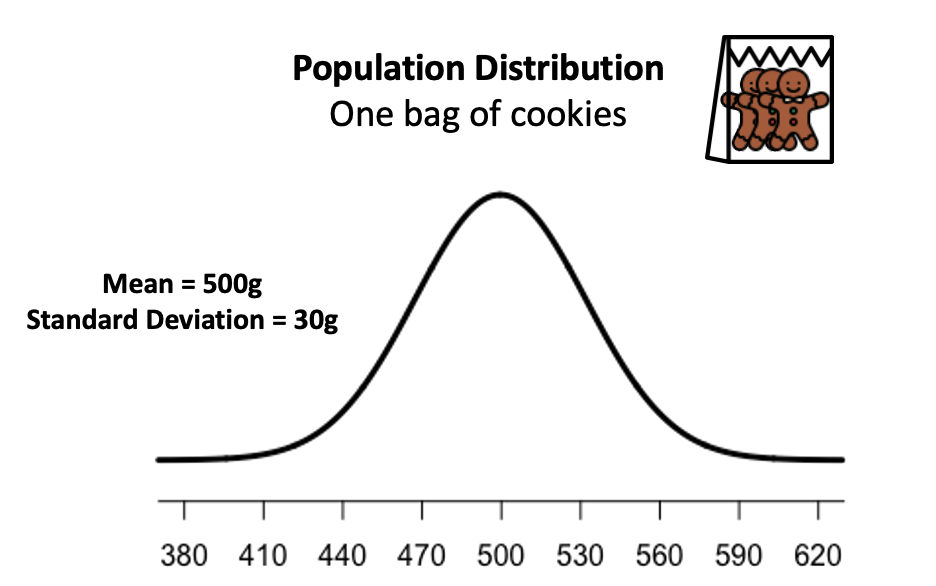
这个店的老板会不会撒谎?我们如何确定平均重量是不是500g呢?这就需要“hypothesis testing”出场了.
null hypothesis & alternative hypothesis
- 我们设置null hypothesis(H0)和alternative hypothesis(H1). 作为一个理性的人, 我们不能在没有证据的情况下怀疑别人.所以我们假设店老板是诚实的(H0), 如果我们想检查他的饼干是不是少于500g, 我们需要搜集证据来支持我们的猜测(H1):
H0: 每袋的重量$$\mu$$=500g
H1: 每袋的重量$$\mu$$<500g
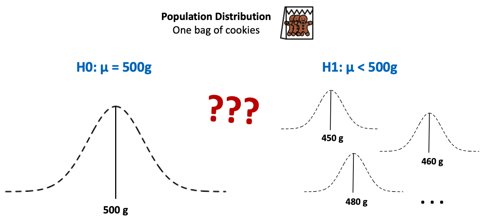
由于我们不知道population distribution, 所以使用虚线来表示. 如果店老板是诚实的, 那么分布就应该是左边的图片. 如果是小于500g, 则是右边的图片任何一个.
Inferential Statistics
我们无法得到所有饼干的重量, 既无法估算population distribution. 所以我们可以通过抽样来计算parameters(attributes of the population).
- 首先我们从population中抽样得到sample data
- 然后计算attributes of the sample, 进一步推算attributes of the population
Examples of parameters and statistics:
- parameters: population mean (μ), population standard deviation (σ) …
- statistics: sample mean (x̄), sample standard deviation (s) …
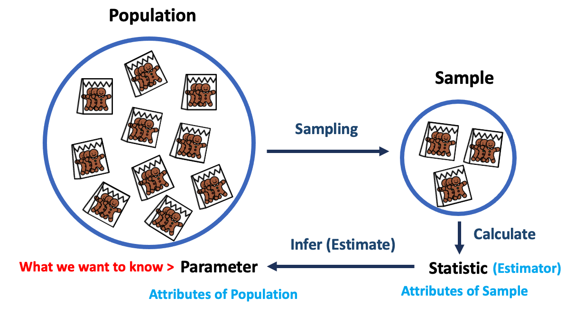
我们关心的不是单个的未知的parameter, 而是“whether we can reject the null hypothesis?”
同样的, 我们也是先计算样本数据的统计量, 来回答这个问题.我们称之为Test Statistics
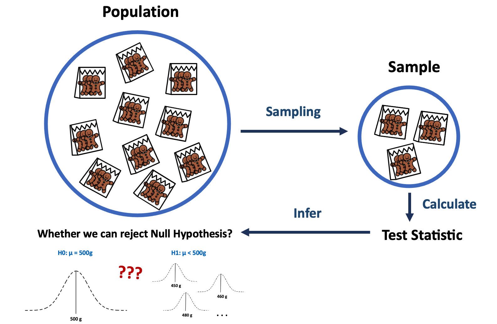
Sampling Distribution Review
如果我们多次从population中抽样, 我们可以获得多个sample datasets. 我们计算每个sample dataset的mean (x̄), 通过这些mean可以画出distribution of sample mean (x̄).由于这个distribution, 是由 sample statistic得来, 所以我们称之为: Sampling Distribution of sample mean (x̄).
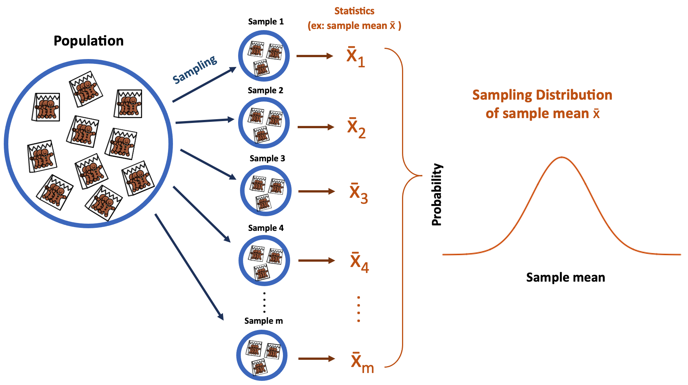
使用brown color来代表sampling distribution curve
Testing Hypothesis Statements
- 获得样本数据集, 我们获得25袋饼干, 计算其mean weight (x̄)=485g
- 假设null hypothesis is true, 既一袋饼干的population distribution为500g
根据Central Limit Theorem, 我们可以得到sample mean (x̄)的sampling distribution.
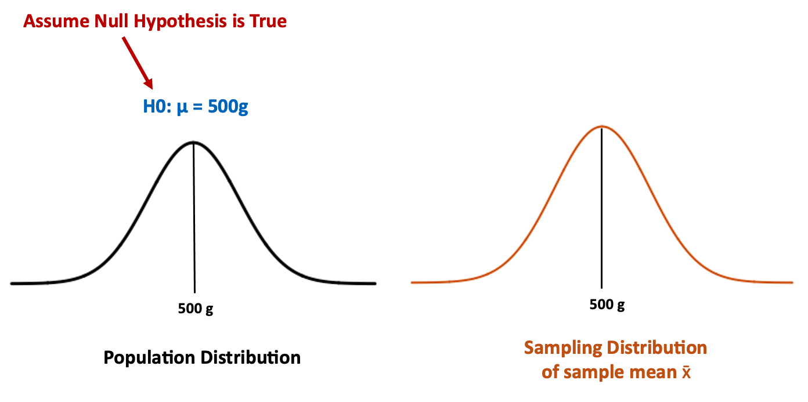
如果, 我们假设null hypothesis is true, 则我们sample mean相对于expected mean value (500g)低了15g(485-500=-15).
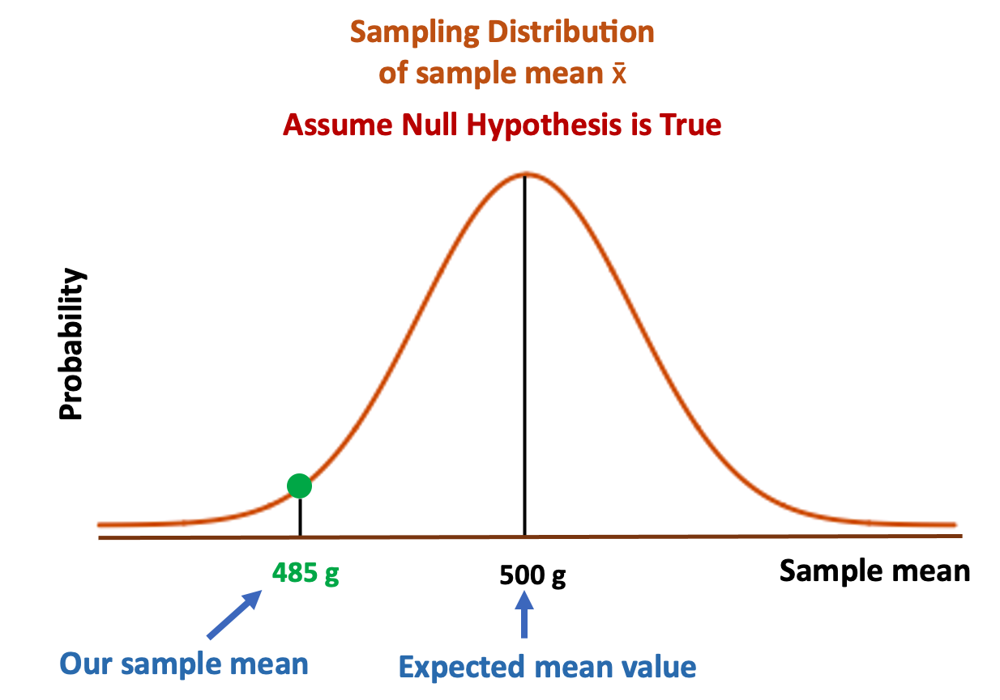
但是"15g"只是一个数字, 并不能作为解释. 另外我们想计算曲线下方的概率, 但是直接计算会非常的低效, 因为不通的曲线对应了不通的值.
所以我们要对其进行standardize, 这样distribution的mean为0.
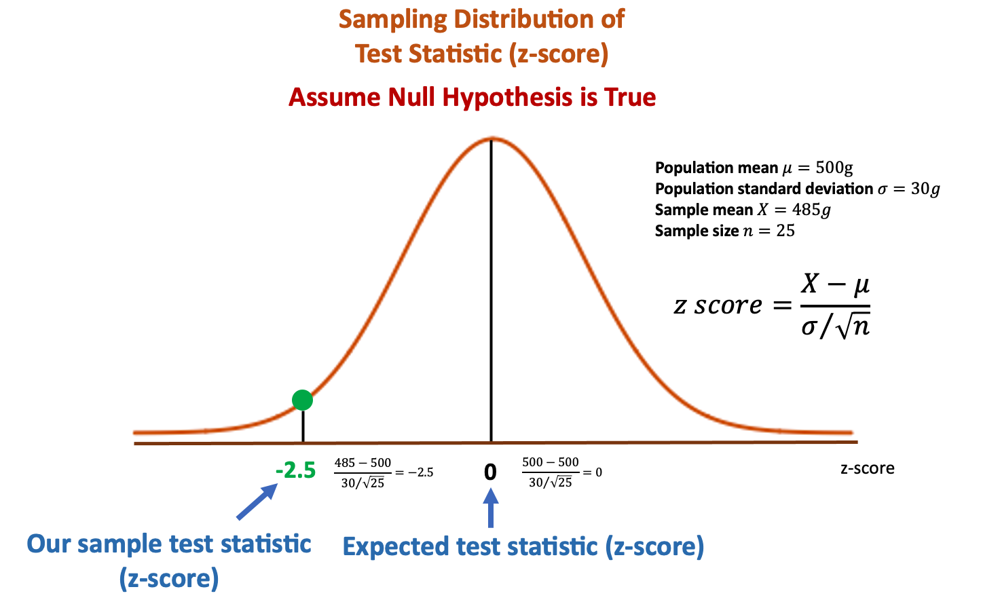
如果Hypothesis H0成立, 则population mean =500g, sample mean = 500g.
在这次抽样中, 我们的sample mean = 485g, 计算后的test statistic = -2.5. 表示sample data有2.5个standard errors相对于expected value.
不通的场景(categorical? quantitative?)对应了不通的test statistic, 其他还有z-test, t-test, chi-square test. 在这个场景中, 由于我们感兴趣的是mean value, 而且假设population data是已知tandard deviation (σ)的normally distributed. 根据这些前提, 我们选择了z-test.
那么在null hypothesis为真时, 获得这样的样本数据集的概率是多少呢?
sampling distribution curve下两点之间的概率是两点之间的面积.这个值就是p-value
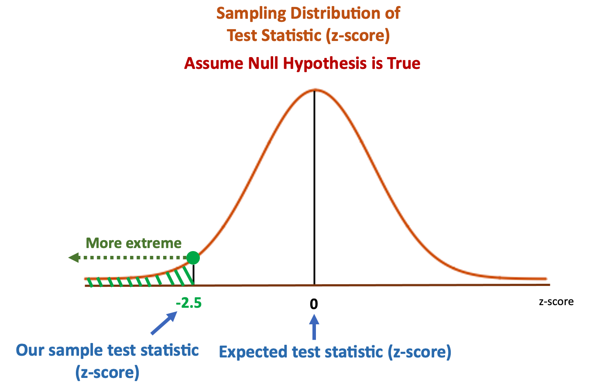
通过查询z-table, 得到p-value为0.0062
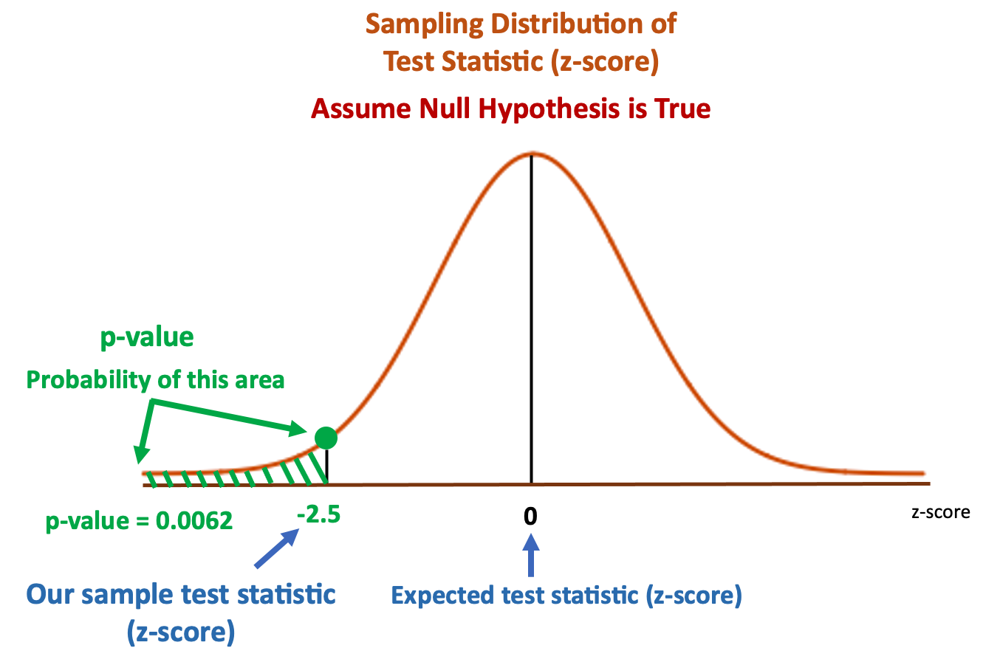
这是一个非常小的值, 它意味着在 null hypothesis 为真的条件下(population mean really equals 500g), 如果我们从population distribution中采样1000次, 有6.2次的机会获得这个样本集合(sample mean = 485g), 或者sample mean < 485g.
换句话说:
如果我们获得一个mean=485g的采样数据集, 他们的解释有两个:
- population mean=500g(H0是正确的), 我们很"幸运"的获得了这个rare采样的数据集(P=0.0062)
- H0是错误的, 这个mean=485g的采样数据集可能来自于其他的population distribution, 当然很可能是来自于mean = 485g 的population distribution.
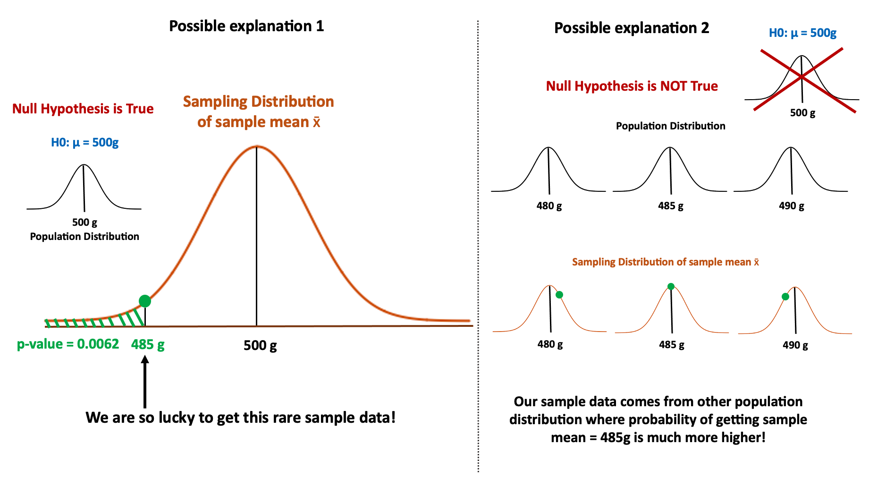
至于是使用第一个解释还是第二个解释,需要引入新的概念-significant level (α).这个值是再假设检验之前设置的, 它就是评判p-value的阈值, This criterion is:
- if p-value ≤ significant level (α), we reject the null hypothesis (H0).
- if p-value > significant level (α), we fail to reject the null hypothesis (H0).
我们设置significant level为0.05.如果p-value在红色区域, 我们就拒绝H0的假设;如果p-value大于红色区域, 我们就接收H0的假设.
significant level (α)还indicates,maximum risk we are acceptable for type I error (type I error means we reject H0 when H0 is actually true).
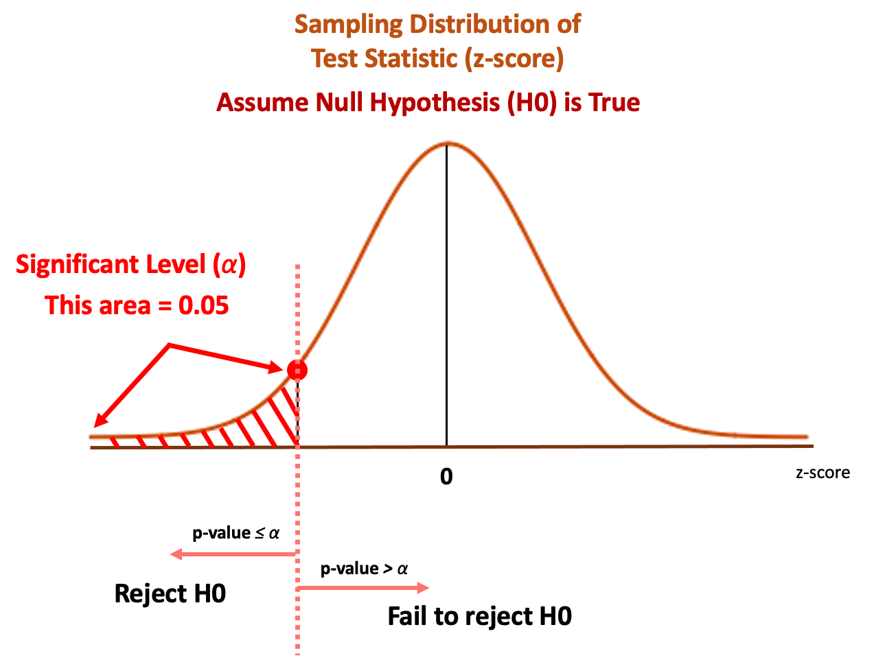
在这个场景中, 我们的p-value=0.0062, 小于significant level (α)=0.05. 所以我们就拒绝了假设H0, 而接受了H1.
Normality Tests
用来检测数据集是否是Gaussian distribution.
Shapiro-Wilk Test
数据集是否是Gaussian distribution.
Assumptions
independent and identically distributed (iid).独立同分布
Interpretation
H0: 数据集是Gaussian distribution.
H1: 数据集不是Gaussian distribution.
from scipy.stats import shapiro
data = [0.873, 2.817, 0.121, -0.945, -0.055, -1.436, 0.360, -1.478, -1.637, -1.869]
stat, p = shapiro(data)
print('stat=%.3f, p=%.3f' % (stat, p))
if p > 0.05:
print('Probably Gaussian')
else:
print('Probably not Gaussian')D’Agostino’s K^2 Test
Assumptions
independent and identically distributed (iid).独立同分布
Interpretation
H0: 数据集是Gaussian distribution.
H1: 数据集不是Gaussian distribution.
from scipy.stats import normaltest
data = [0.873, 2.817, 0.121, -0.945, -0.055, -1.436, 0.360, -1.478, -1.637, -1.869]
stat, p = normaltest(data)
print('stat=%.3f, p=%.3f' % (stat, p))
if p > 0.05:
print('Probably Gaussian')
else:
print('Probably not Gaussian')Anderson-Darling Test
Assumptions
independent and identically distributed (iid).独立同分布
Interpretation
H0: 数据集是Gaussian distribution.
H1: 数据集不是Gaussian distribution.
from scipy.stats import anderson
data = [0.873, 2.817, 0.121, -0.945, -0.055, -1.436, 0.360, -1.478, -1.637, -1.869]
result = anderson(data)
print('stat=%.3f' % (result.statistic))
for i in range(len(result.critical_values)):
sl, cv = result.significance_level[i], result.critical_values[i]
if result.statistic < cv:
print('Probably Gaussian at the %.1f%% level' % (sl))
else:
print('Probably not Gaussian at the %.1f%% level' % (sl))Correlation Tests
测试两个样本集是否是相关的(related)
Pearson’s Correlation Coefficient
测试两个样本集是否是线性关系(linear relationship)
Assumptions
- independent and identically distributed (iid). 独立同分布
- normally distributed. 正太分布
- same variance. 相同的方差
Interpretation
H0: the two samples are independent.
H1: there is a dependency between the samples.
from scipy.stats import pearsonr
data1 = [0.873, 2.817, 0.121, -0.945, -0.055, -1.436, 0.360, -1.478, -1.637, -1.869]
data2 = [0.353, 3.517, 0.125, -7.545, -0.555, -1.536, 3.350, -1.578, -3.537, -1.579]
stat, p = pearsonr(data1, data2)
print('stat=%.3f, p=%.3f' % (stat, p))
if p > 0.05:
print('Probably independent')
else:
print('Probably dependent')
Spearman’s Rank Correlation
测试两个样本集是否是monotonic relationship.
Assumptions
- independent and identically distributed (iid). 独立同分布
- sample can be ranked. 样本可排序
Interpretation
H0: the two samples are independent.
H1: there is a dependency between the samples.
from scipy.stats import spearmanr
data1 = [0.873, 2.817, 0.121, -0.945, -0.055, -1.436, 0.360, -1.478, -1.637, -1.869]
data2 = [0.353, 3.517, 0.125, -7.545, -0.555, -1.536, 3.350, -1.578, -3.537, -1.579]
stat, p = spearmanr(data1, data2)
print('stat=%.3f, p=%.3f' % (stat, p))
if p > 0.05:
print('Probably independent')
else:
print('Probably dependent')Kendall’s Rank Correlation
测试两个样本集是否是monotonic relationship.
Assumptions
- independent and identically distributed (iid). 独立同分布
- sample can be ranked. 样本可排序
Interpretation
H0: the two samples are independent.
H1: there is a dependency between the samples.
from scipy.stats import kendalltau
data1 = [0.873, 2.817, 0.121, -0.945, -0.055, -1.436, 0.360, -1.478, -1.637, -1.869]
data2 = [0.353, 3.517, 0.125, -7.545, -0.555, -1.536, 3.350, -1.578, -3.537, -1.579]
stat, p = kendalltau(data1, data2)
print('stat=%.3f, p=%.3f' % (stat, p))
if p > 0.05:
print('Probably independent')
else:
print('Probably dependent')Chi-Squared Test
测试两个categorical variables是related or independent
Assumptions
Observations used in the calculation of the contingency table are independent.
25 or more examples in each cell of the contingency table.
Interpretation
H0: the two samples are independent.
H1: there is a dependency between the samples.
# Example of the Chi-Squared Test
from scipy.stats import chi2_contingency
table = [[10, 20, 30],[6, 9, 17]]
stat, p, dof, expected = chi2_contingency(table)
print('stat=%.3f, p=%.3f' % (stat, p))
if p > 0.05:
print('Probably independent')
else:
print('Probably dependent')Stationary Tests
测试时间序列是stationary or not.
Augmented Dickey-Fuller Unit Root Test
测试一个time series是否有一个unit root.例如是否有某个趋势,更简单点是否是autoregressive.
Assumptions
Observations in are temporally ordered.
Interpretation
H0: a unit root is present (series is non-stationary).
H1: a unit root is not present (series is stationary).
from statsmodels.tsa.stattools import adfuller
data = [0, 1, 2, 3, 4, 5, 6, 7, 8, 9]
stat, p, lags, obs, crit, t = adfuller(data)
print('stat=%.3f, p=%.3f' % (stat, p))
if p > 0.05:
print('Probably not Stationary')
else:
print('Probably Stationary')Kwiatkowski-Phillips-Schmidt-Shin
测试时间序列是stationary or not.
Assumptions
Observations in are temporally ordered.
Interpretation
H0: a unit root is present (series is non-stationary).
H1: a unit root is not present (series is stationary).
from statsmodels.tsa.stattools import kpss
data = [0, 1, 2, 3, 4, 5, 6, 7, 8, 9]
stat, p, lags, crit = kpss(data)
print('stat=%.3f, p=%.3f' % (stat, p))
if p > 0.05:
print('Probably not Stationary')
else:
print('Probably Stationary')Parametric Statistical Hypothesis Tests
用来比较两个数据样本的statistical tests
Student’s t-test
比较两个独立的样本集的均值是显著不同的
Assumptions
- independent and identically distributed (iid). 独立同分布
- normally distributed. 正态分布
- same variance. 相同的方差
Interpretation
H0: the means of the samples are equal.
H1: the means of the samples are unequal.
from scipy.stats import ttest_ind
data1 = [0.873, 2.817, 0.121, -0.945, -0.055, -1.436, 0.360, -1.478, -1.637, -1.869]
data2 = [1.142, -0.432, -0.938, -0.729, -0.846, -0.157, 0.500, 1.183, -1.075, -0.169]
stat, p = ttest_ind(data1, data2)
print('stat=%.3f, p=%.3f' % (stat, p))
if p > 0.05:
print('Probably the same distribution')
else:
print('Probably different distributions')Paired Student’s t-test
Tests whether the means of two paired samples are significantly different.
Assumptions
- independent and identically distributed (iid).
- normally distributed.
- same variance.
- Observations across each sample are paired. 连个样本集的数据可以两两配对
Interpretation
H0: the means of the samples are equal.
H1: the means of the samples are unequal.
from scipy.stats import ttest_rel
data1 = [0.873, 2.817, 0.121, -0.945, -0.055, -1.436, 0.360, -1.478, -1.637, -1.869]
data2 = [1.142, -0.432, -0.938, -0.729, -0.846, -0.157, 0.500, 1.183, -1.075, -0.169]
stat, p = ttest_rel(data1, data2)
print('stat=%.3f, p=%.3f' % (stat, p))
if p > 0.05:
print('Probably the same distribution')
else:
print('Probably different distributions')Analysis of Variance Test (ANOVA)
两个或多个独立样本是否显著不同
Assumptions
Observations in each sample are independent and identically distributed (iid).
Observations in each sample are normally distributed.
Observations in each sample have the same variance.
Interpretation
H0: the means of the samples are equal.
H1: one or more of the means of the samples are unequal.
# Example of the Analysis of Variance Test
from scipy.stats import f_oneway
data1 = [0.873, 2.817, 0.121, -0.945, -0.055, -1.436, 0.360, -1.478, -1.637, -1.869]
data2 = [1.142, -0.432, -0.938, -0.729, -0.846, -0.157, 0.500, 1.183, -1.075, -0.169]
data3 = [-0.208, 0.696, 0.928, -1.148, -0.213, 0.229, 0.137, 0.269, -0.870, -1.204]
stat, p = f_oneway(data1, data2, data3)
print('stat=%.3f, p=%.3f' % (stat, p))
if p > 0.05:
print('Probably the same distribution')
else:
print('Probably different distributions')Repeated Measures ANOVA Test
两个或多个成对的独立样本是否显著不同
Assumptions
Observations in each sample are independent and identically distributed (iid).
Observations in each sample are normally distributed.
Observations in each sample have the same variance.
Observations across each sample are paired.
Interpretation
H0: the means of the samples are equal.
H1: one or more of the means of the samples are unequal.
Nonparametric Statistical Hypothesis Tests
两个独立样本分布是否相同
Mann-Whitney U Test
两个独立样本分布是否相同
Assumptions
- independent and identically distributed (iid). 独立同分布
- Observations in each sample can be ranked. 可以排序
Interpretation
H0: the distributions of both samples are equal.
H1: the distributions of both samples are not equal.
from scipy.stats import mannwhitneyu
data1 = [0.873, 2.817, 0.121, -0.945, -0.055, -1.436, 0.360, -1.478, -1.637, -1.869]
data2 = [1.142, -0.432, -0.938, -0.729, -0.846, -0.157, 0.500, 1.183, -1.075, -0.169]
stat, p = mannwhitneyu(data1, data2)
print('stat=%.3f, p=%.3f' % (stat, p))
if p > 0.05:
print('Probably the same distribution')
else:
print('Probably different distributions')Wilcoxon Signed-Rank Test
两个成对的独立样本集分布是否相同
Assumptions
- independent and identically distributed (iid).
- Observations in each sample can be ranked.
- Observations across each sample are paired.
Interpretation
H0: the distributions of both samples are equal.
H1: the distributions of both samples are not equal.
# Example of the Wilcoxon Signed-Rank Test
from scipy.stats import wilcoxon
data1 = [0.873, 2.817, 0.121, -0.945, -0.055, -1.436, 0.360, -1.478, -1.637, -1.869]
data2 = [1.142, -0.432, -0.938, -0.729, -0.846, -0.157, 0.500, 1.183, -1.075, -0.169]
stat, p = wilcoxon(data1, data2)
print('stat=%.3f, p=%.3f' % (stat, p))
if p > 0.05:
print('Probably the same distribution')
else:
print('Probably different distributions')Kruskal-Wallis H Test
两个或更多的独立样本集分布是否相同
Assumptions
Observations in each sample are independent and identically distributed (iid).
Observations in each sample can be ranked.
Interpretation
H0: the distributions of all samples are equal.
H1: the distributions of one or more samples are not equal.
# Example of the Kruskal-Wallis H Test
from scipy.stats import kruskal
data1 = [0.873, 2.817, 0.121, -0.945, -0.055, -1.436, 0.360, -1.478, -1.637, -1.869]
data2 = [1.142, -0.432, -0.938, -0.729, -0.846, -0.157, 0.500, 1.183, -1.075, -0.169]
stat, p = kruskal(data1, data2)
print('stat=%.3f, p=%.3f' % (stat, p))
if p > 0.05:
print('Probably the same distribution')
else:
print('Probably different distributions')Friedman Test
两个或更多的成对的独立样本集分布是否相同
Assumptions
- independent and identically distributed (iid).
- Observations in each sample can be ranked.
- Observations across each sample are paired.
Interpretation
H0: the distributions of all samples are equal.
H1: the distributions of one or more samples are not equal.
# Example of the Friedman Test
from scipy.stats import friedmanchisquare
data1 = [0.873, 2.817, 0.121, -0.945, -0.055, -1.436, 0.360, -1.478, -1.637, -1.869]
data2 = [1.142, -0.432, -0.938, -0.729, -0.846, -0.157, 0.500, 1.183, -1.075, -0.169]
data3 = [-0.208, 0.696, 0.928, -1.148, -0.213, 0.229, 0.137, 0.269, -0.870, -1.204]
stat, p = friedmanchisquare(data1, data2, data3)
print('stat=%.3f, p=%.3f' % (stat, p))
if p > 0.05:
print('Probably the same distribution')
else:
print('Probably different distributions')参考:
https://machinelearningmastery.com/statistical-hypothesis-tests-in-python-cheat-sheet/
https://www.kaggle.com/hamelg/python-for-data-24-hypothesis-testing
https://analyticsindiamag.com/10-most-popular-statistical-hypothesis-testing-methods-using-python/
https://inblog.in/Hypothesis-Testing-using-Python-RqrE4uDqMe
https://towardsdatascience.com/what-is-p-value-370056b8244d